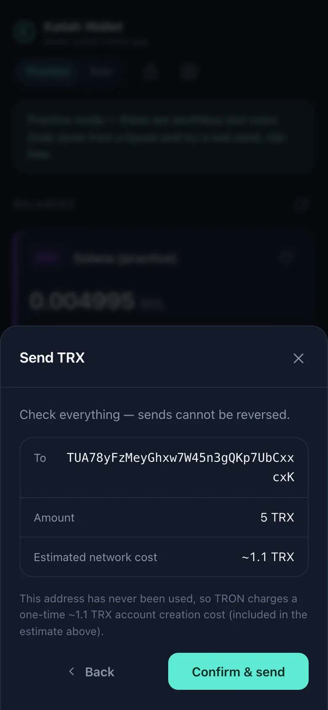
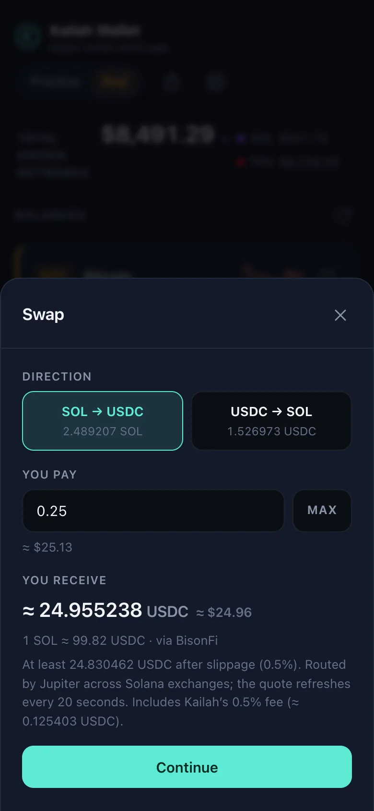
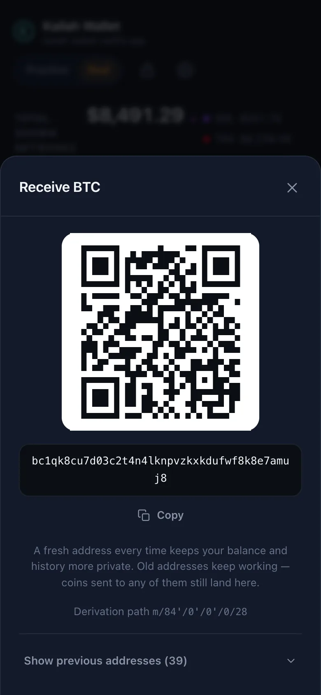
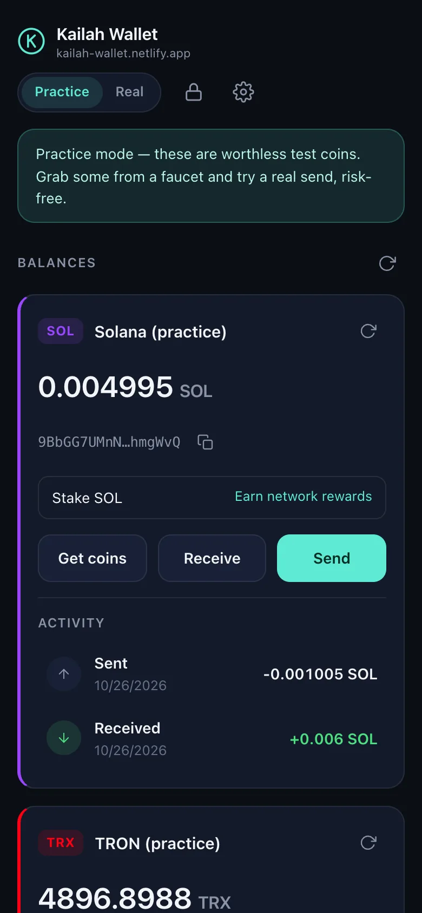
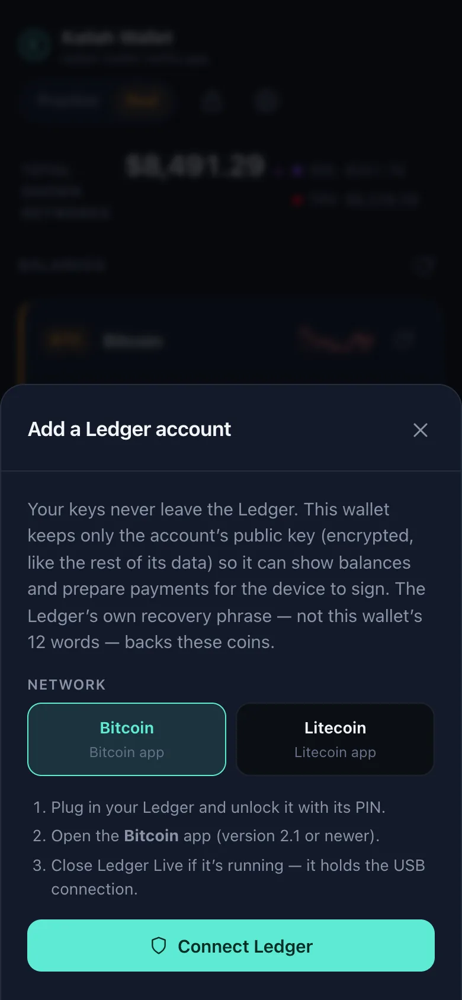

v2.7.9 · open source · no servers, no trackers
The wallet that reads every transaction before you sign it.
Kailah Wallet is a self-custody wallet that runs entirely in your browser. One 12-word recovery phrase holds Bitcoin, Dogecoin, Litecoin, USDC and ETH on Base, Ethereum and Arbitrum, BNB, Solana and TRON. Your keys are created and encrypted on your device and never leave it.
Hobby-grade and maintained by one person. Its security reviews were AI-assisted, not a third-party audit. Keep amounts small.
- 9networks
- 1recovery phrase
- 0servers of ours
- 0trackers or accounts
- 0.5%the only Kailah fee, on swaps
Nine networks, one phrase
Everything from a single, standard recovery phrase.
Twelve BIP39 words derive every account. Bitcoin, Litecoin and Dogecoin use the usual paths, so the same phrase restores in Electrum, Sparrow or Cake Wallet; the Solana account restores in Phantom or Solflare. Each network family has a practice twin on its test network.
-
BTC
Bitcoin
A fresh address for every payment, fee choice, Speed up (RBF) for stuck sends, Ledger accounts.
Practice: testnet4 -
DOGE
Dogecoin
Send, receive and history on the standard BIP44 path, read from two free data services.
Mainnet only -
LTC
Litecoin
Native segwit, Speed up (RBF) and Ledger accounts. MWEB addresses are recognised and explained, not mis-rejected.
Mainnet only -
BASE
Base
USDC and the ETH that pays its fees, which usually cost fractions of a cent here.
Practice: Base Sepolia -
ETH
Ethereum
USDC and ETH on mainnet, with the fee truth on the form: it can cost dollars when the network is busy.
Same 0x address as Base -
ARB
Arbitrum One
USDC and ETH, cheap fees, the same one address as every other Ethereum-style network here.
Same 0x address as Base -
BNB
BNB Chain
Hold and send BNB from the same account. Stated plainly: no keyless explorer exists, so this card has no activity feed.
Balances and sends only -
SOL
Solana
SOL and USDC, swaps between them through Jupiter, native staking to a validator, Solana Pay QR codes.
Practice: devnet -
TRX
TRON
TRX and USDT (TRC-20), with Stake 2.0 staking for rewards and cheaper USDT sends.
Practice: Nile
The difference
Every transaction is checked before signing.
A wallet's one real job is to sign only what you meant. Kailah decodes what it is about to sign, compares it with what you asked for, and refuses anything else. Nothing is signed blind.
- To
- TUA78y…CxxcxK
- Amount
- 25 USDT
- Network cost
- ~12.45 TRX
- Transaction built by the node, decoded field by field
- Recipient and amount match what you typed
- Token transfer is byte-identical to the one the wallet built
- No field the wallet didn't ask for
- No earlier send still waiting to land
- Not a lookalike of an address you've paid
-
TRON: decoded field by field
The network node builds the transaction. The wallet reads the bytes back with its own decoder and refuses to sign anything it didn't ask for. A USDT send must match the wallet's own call, byte for byte.
-
Swaps: simulated before signed
Jupiter's instructions must pass an allow-list, and an on-chain simulation must match the quote. A swap can only move the two coins on screen, never your other tokens.
-
No token approvals, ever
On Ethereum-style networks the wallet signs plain transfers only, so no contract is ever allowed to spend your USDC later. Every signature names its chain.
-
A double-pay guard
Every broadcast is recorded before it goes out. While an earlier send can't be confirmed, a new one is refused, and a send that failed but landed anyway is reported rather than paid twice.
-
The lookalike-address warning
An address that starts and ends like one you've paid, but isn't it, stops the send until you confirm you've checked it. That's the "address poisoning" scam, and only sends you signed can make an address trusted.
-
Ledger: signatures verified twice
Only signatures come back from the device. Each one is checked against the wallet's own digest of the transaction you reviewed before anything is broadcast.
Seen in the wallet
Plain screens. No surprises.
Real screenshots of version 2.7.8, taken with the public test phrase. Every number you see before you confirm is the number the wallet checked.
-

The review screen
A send stopped at review: recipient, amount, the estimated network cost and the hard cap. On TRON it opens only after the node's bytes decoded to exactly this.
-

A swap quote
The rate, the route Jupiter chose, the minimum you will receive after slippage, and the 0.5% Kailah fee itemised, all before you continue.
-

Receiving
A QR code and a fresh Bitcoin address for every payment. Old addresses keep working, and coins sent to any of them still land in the same wallet.
Practice mode
Learn with worthless coins first.
One switch in the header moves every network family to its test network: Bitcoin testnet4, Base Sepolia, Solana devnet and TRON Nile. Faucet links are built in, so you can receive, send and stake before a real coin is involved.
- Practice networks sign with their own keys, so nothing signed in practice mode can ever spend real coins, whatever a test-network service returns.
- The banner, header and card colours change with the mode, and the first switch to real mode asks you to confirm.

Private by design
No servers of ours. No accounts. Nothing to collect.
There are no analytics, cookies, ads or trackers, in the wallet or on this page. To show balances and send coins, the wallet talks straight from your browser to public blockchain and price services.
-
The browser enforces the list
The wallet may contact only a fixed list of public blockchain and price services, written into its Content Security Policy. The browser blocks everything else, and the same policy ships inside the page and the extension.
-
An Argon2id vault
Your recovery phrase is stored only as AES-256-GCM ciphertext under a key derived from your password with Argon2id, which is memory-hard. Cached addresses, balances and history are encrypted too. Everything locks after 15 minutes idle.
-
No server sees your wallet
No sign-up, no e-mail, no push server. Payment alerts are generic, carry no amount and are made on your device while the wallet is open.
-
What the services do see
Blockchain services see the public addresses the wallet looks up, the transactions you choose to send, and your IP address, like any website request. The privacy policy names every host.
Open source and verifiable
Don't trust the site. Check the bytes.
The source is MIT-licensed on GitHub. Builds are reproducible: the same commit, built with the same toolchain, gives byte-identical files, and CI prints the digests of every push.
-
npm run verify:livefetches every file from both official sites and compares each one, byte for byte, with your own build, along with all seven security headers on every response. - That proves what you were served just now, not what everyone gets. The guarantee that the code can't change between visits is what the store-signed extension is for.
- The security review record is public too, including the regression one fix introduced and how it was caught.
# exact versions from the lockfile; install scripts are off
git clone https://github.com/cbmcjargon/kailah.git
cd kailah
npm ci
npm run typecheck && npm run check:offline
npm run build && npm run build:extension
# must equal the "Build digests" CI printed for this commit
npm run digest
# is each official site serving exactly this build?
npm run verify:liveThe official Kailah Wallet comes only from the repository, kailah-wallet.netlify.app, wallet.photoprompting.org and the Chrome Web Store listing. A copy under the same name from anywhere else is not the real one.

Ledger accounts
Keep the key on the device. Keep the checks in the wallet.
Add a Ledger account for Bitcoin or Litecoin beside your seed accounts. The wallet keeps only the account's public key, encrypted, and scans balances and history as usual. Every send or Speed up is signed on the device after it shows the recipient, amount and fee.
- Only signatures come back. Each is verified against the wallet's own digest of the reviewed transaction, and a different Ledger is refused.
- Written from Ledger's published protocols with no Ledger packages added. Chrome or Edge on a computer, or Chrome on Android over USB.
New, and tested against a device emulator so far, not yet on a physical Ledger. Start with small amounts in practice mode.
Also in the box
The rest of a complete wallet.
Staking
Delegate SOL to a validator from a curated list, or stake TRX for rewards and cheaper USDT sends. Stake accounts come from your own key, so the 12 words recover them anywhere.
Swaps
SOL to USDC and back through Jupiter, inside the wallet. Each swap carries a 0.5% Kailah fee, paid in USDC to a published account and shown before you confirm.
Buy
Links to licensed onramps and exchange-withdrawal guides. Strike, Kraken and Gemini are the developer's referral links and are labelled "Invite link" in the app.
Face ID or fingerprint
Unlock with a passkey where your device supports it. The password always works and is required to reveal the phrase.
QR codes
Scan payment requests with the camera, decoded on your device, with wrong-network detection. Show your own address as a QR code.
Payment alerts
A generic "payment received" notice, with no amount, while the wallet is open. There is deliberately no push server.
CSV export
Your history as a spreadsheet file, written so a cell can never run as a formula.
Networks shown
Show only the networks you use. Hidden ones are never queried, and their code isn't even downloaded.
Speed up
Replace a stuck Bitcoin or Litecoin send with a higher-fee version, with the replace-by-fee rules enforced in the wallet.
Installable
Add it to your home screen on Android or iPhone. The offline screen is the only thing ever cached: the wallet's code runs fresh every launch.
Please note
- Kailah is a hobby-grade wallet maintained by one person. Nobody can restore your funds, reverse a send or recover a lost recovery phrase.
- It has had AI-assisted security reviews, not a third-party audit. Keep amounts small.
- One phrase is the whole wallet. The 12 words on paper are the only backup.
- Balances come from the pinned services, but activity feeds and received-coin alerts each trust a single data source. Confirm a large receipt on a second explorer.
- Payment alerts fire only while the app is open. There is no push server, by design.
- Ledger support has been proven against an emulator, not yet on a physical device.
- Dogecoin reads from two free services with small request budgets, so its scans are deliberately frugal.
- BNB Chain shows balances and sends but no activity feed, because no keyless explorer exists for it.
- No MWEB or Monero: confidential-transaction cryptography has no trustworthy browser implementation today.
- Buying happens on licensed third-party sites. A wallet cannot legally take card payments itself.
Questions
Short answers.
Who holds my keys?
You do. The wallet generates the recovery phrase on your device, encrypts it with your password and keeps it in your browser's storage for this site or extension. No server of ours exists to hold a copy, which also means nobody can recover it for you.
Is it audited?
No. The code has had AI-assisted adversarial reviews, and each finding was confirmed by reading the code or by a test. The review of 2026-10-21 recorded 35 findings, three of them fund-loss paths; every critical, high and medium finding is fixed, and the low tier is fixed or documented as accepted. No third-party firm has audited the code. The full record is public.
Why "keep amounts small"?
Because one person maintains it, no independent audit has been done, and a browser is a weaker place for keys than a hardware device. Practice mode exists so you can learn with worthless coins, and Ledger accounts exist so a serious balance can keep its key on a device.
How does the developer make money?
Two ways, both disclosed. Swaps carry a 0.5% fee, paid in USDC to a published account and shown before you confirm. The Buy screens include three referral links, Strike, Kraken and Gemini, each labelled "Invite link"; a new account through one gets that exchange's current sign-up offer, and the developer gets a referral reward. No data is collected or sold.
Where is the Chrome extension?
On the Chrome Web Store. You can also build it from the source and load it unpacked, as the repository's extension guide describes. The extension is the safer way to run the wallet: its code is fixed by the signed store package, while a website can serve different code on any visit. It keeps its own wallet, separate from the website's, so restore your 12 words there to use the same coins. A new version can reach the store a few days after the website, while Google reviews it.
Which browsers work?
The web app runs in current browsers and can be installed on Android (Chrome's "Add to Home screen") and iPhone (Safari's "Add to Home Screen"). Ledger accounts need WebHID or WebUSB: Chrome or Edge on a computer, or Chrome on Android with a USB cable. Safari and Firefox have neither, and the wallet says so instead of offering a button.
What happens if this website disappears?
Your coins are on their blockchains, not on the site, and your phrase is a standard BIP39 phrase. Bitcoin, Litecoin and Dogecoin restore in any BIP84- or BIP44-capable wallet, the Solana account in Phantom or Solflare. The source stays on GitHub under the MIT license, and the extension carries its code with it.
Can I fork it?
Yes, the code is MIT-licensed. The name "Kailah Wallet" and the logo follow a separate rule: a build distributed under that name must keep the referral links and the swap fee unchanged, and a build that changes them must use a different name and logo, so people can tell an official build from a lookalike. The name and logo policy has the details.
How do I report a security problem?
Privately, through GitHub's vulnerability reporting, never in a public issue. Expect an acknowledgement within 14 days. There is no paid bounty, and good-faith research on test networks that follows the security policy will not be pursued legally.
Try it with worthless coins first.
Open the wallet, flip the switch to practice mode and send yourself something from a faucet. Nothing real is at stake until you decide it is.